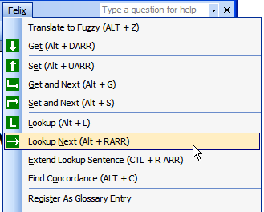
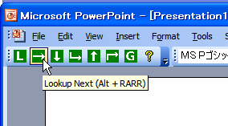
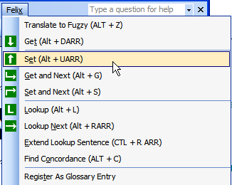
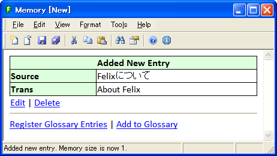

Felix Manual
Quick Start Tutorial (MS PowerPoint)
This brief tutorial will help you get up and running with Felix for translating documents in Microsoft® PowerPoint.
-
Open the document you want to translate in PowerPoint.

-
From the Felix menu, select "Look up Next", or click the right
arrow button on the Felix toolbar.

Menu selection
Toolbar button -
This will select the first sentence, and look it up in Felix.
Felix will start automatically; arrange the PowerPoint, memory, and glossary windows to your liking (I prefer making the glossary window long to the side, so I can see lots of glossary matches at once).

Since you won't already have a translation memory loaded, it should show that you have no matches.

First sentence looked up in Felix -
Translate the sentence, overwriting the original.
After you translate it, put the cursor at the end of the sentence, and from the Felix menu, select "Set" or click the up arrow button on the Felix toolbar.

Menu selection
Toolbar button -
This will register the translation for the current sentence ("query") in the Felix window.

First translation is set
Shown in Felix window - Again select "Look up Next" or click the right arrow to repeat this process.
- Translate the next sentence, using the same procedure as in steps 4 and 5, above.

The second translation is registered - When you translate the last text box on a slide and then click the right arrow
or select "Look up Next" from the menu, a dialog box will appear
and ask whether you'd like to proceed to the next slide, or go back to the top
of the current slide.

The End of Slide Reached dialog box appearsIf you select Next slide, the first sentence on the next slide will be looked up. Select the "Don't ask me again" checkbox if you want to make this choice automatically from now on.
- If you selected "Next slide," the first sentence on the next slide is looked up.

First sentence in second slide is looked upCarry on translating the document.


You can download the PowerPoint file used for this tutorial.